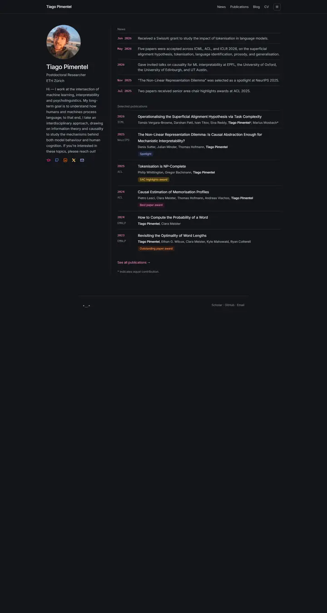

Tiago Pimentel
静かなナイトモードのドシエ。スレートの地に Inter の本文、余白に沿って並ぶピンクの等幅の日付、柔らかく色づいたいくつかの受賞ピル。

表示されたページと照合済みです。
選んだ理由
くっきりしたダークの2カラムレイアウトで、固定されるプロフィール列、日付で引くニュースリスト、タグ付きの受賞ピルを備えています。洗練されたダークモードの参考例です。
以下の説明と DESIGN.md 本文は英語です。コーディングエージェントが同じ一つの版を読めるよう、翻訳していません。
概要
カラーパレット
タイポグラフィ
Inter 400/500
Tiago Pimentel, NLP, information theory, interpretability
Abstract · Method · Results · BibTeX — 0123456789
IBM Plex Mono 400/500
Tiago Pimentel, NLP, information theory, interpretability
Abstract · Method · Results · BibTeX — 0123456789
tabler-icons
Tiago Pimentel, NLP, information theory, interpretability
Abstract · Method · Results · BibTeX — 0123456789
余白と形
ページの構成要素
ガイドライン
似たスタイル

Amir Bar
Imperial ブルーの端正な教員案内。白地に Inter、ピル型のリンク、手を伸ばすと数ピクセル浮き上がる論文カード。

Anagh Malik
アプリコットで温めた Barron の表。14px の Lato、オレンジに光る青いリンク、大事な論文は午後遅くの光の帯の中に収まっている。

Christoph Feichtenhofer
学会ホールの横断幕のような Facebook ブルーの帯に続き、赤字の論文名、緑の掲載先、両端揃えのグレーの要旨が長い台帳のように並ぶ。

David B. Lindell
丁寧な編集者が組んだラボノート。Source Serif の本文、Source Sans のラベル、澄んだ青ひとつ、そしてどの論文にも写真が添えて綴じてある。

David Novotny
夕暮れの港と静かな閲覧室。ティールからミッドナイトへの固定パネルに右揃えの連絡先、白地には柔らかなグレーの文字とタンジェリン色のリンク。

Jaeyeon Kim
細い Roboto で組んだ静かなゼミの配布資料。声を張るのは赤くハイライトされたひとつの問いとミント色のタグの列だけ。